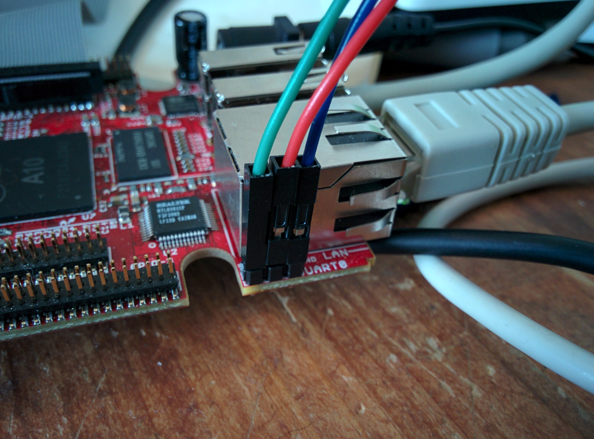
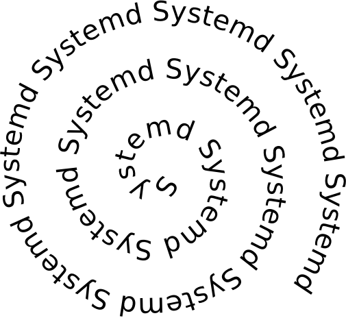

Software install¶
Note
The install covers what I needed for my final project and thus does not only contain the bare minimals to get the shield working but also how I performed the flasher tool I wanted to create among other things.
Most relevant are the kernel tweaks to enable SPIDEV and such.
The debian image that gets shipped with the A10 is based on an older debian (not Jessie) the board support is quite good but some tools (like android fastboot that I needed where missing). When using the default image the device boots into full graphical mode using a lightweight desktop. The distribution has been tweaked for the Lime.
I started playing around and soon found the need to start tweaking the device tree to enable SPI and SPIDEV. Figuring out where the sources for the dtb are to be found was a task I was not looking forward to hence I used the device tree compiler to convert my dtb into a dts (dtb -I dtb /boot/dts/sun4x-A10-Olimex.dtb)
Helpfull people of the #linux-sunxi irc channel (freenode) suggested I try different kernel version with.. corresponding device tree.. Either way after talking to Wizzup on irc I decided that trying out the mailine kernel was the thing to do and so did I (Read about that bellow)
Attaching serial¶
We attached a serial as described on my A13 page where RX(INPUT)=GREEN, TX(OUTPUT)=RED, GND(GROUND)=BLUE and used picocom to attach to the serial
picocom -b 115200 /dev/ttyUSB0
Debian upgrade¶
We installed debian Jessie on the Lime that is now fully supported by debian!
Creating the install sdcard¶
We followed the sd-card install over serial and downloaded: firmware.A10-OLinuXino-Lime.img.gz and partition.img.gz from a debian mirror
Creating the sdcard:
keesj@e540:~/Downloads$ sha1sum firmware.A10-OLinuXino-Lime.img.gz partition.img.gz
569e0219411238c9f304ce649e074b9bd07cd311 firmware.A10-OLinuXino-Lime.img.gz
7755184cd87743b1956817f5155b3949584ab118 partition.img.gz
zcat firmware.A10-OLinuXino-Lime.img.gz partition.img.gz > install.img
keesj@e540:~/Downloads$ sudo dd if=install.img of=/dev/mmcblk0 bs=1M
39+1 records in
39+1 records out
40960000 bytes (41 MB) copied, 5.9012 s, 6.9 MB/s
keesj@e540:~/Downloads$ sudo fdisk -l /dev/mmcblk0
Disk /dev/mmcblk0: 7931 MB, 7931428864 bytes
250 heads, 53 sectors/track, 1169 cylinders, total 15491072 sectors
Units = sectors of 1 * 512 = 512 bytes
Sector size (logical/physical): 512 bytes / 512 bytes
I/O size (minimum/optimal): 512 bytes / 512 bytes
Disk identifier: 0x00000000
Device Boot Start End Blocks Id System
/dev/mmcblk0p1 * 2048 79999 38976 c W95 FAT32 (LBA)
The boot log for the installer can be found but looks like this:
Terminal ready
U-Boot SPL 2014.10+dfsg1-5 (Apr 07 2015 - 21:52:20)
DRAM: 512 MiB
CPU: 1008000000Hz, AXI/AHB/APB: 3/2/2
U-Boot 2014.10+dfsg1-5 (Apr 07 2015 - 21:52:20) Allwinner Technology
CPU: Allwinner A10 (SUN4I)
I2C: ready
DRAM: 512 MiB
MMC: SUNXI SD/MMC: 0
*** Warning - bad CRC, using default environment
...
....
[ 0.000000] Linux version 3.16.0-4-armmp (debian-kernel@lists.debian.org) (gcc version 4.8.4 (Debian 4.8.4-1) ) #1 SMP Debian 3.16.7-ckt20-1+deb8u2 (2016-01-02)
....
[ 0.000000] CPU: ARMv7 Processor [413fc082] revision 2 (ARMv7), cr=10c5387d
...
Followed debian install¶
created a root and user account (keesj) during install passed -> test123 FIXME :P
Guided “USE ENTIRE DISK” If you don’t use the entire disk the device will still boot from the first partition and you will need to copy the kernel/ramdisk/dtb from the ext partition Created 1 GIG swap!!!
Startup screen:
┌────────────────────────┤ [!!] Partition disks ├─────────────────────────┐
│ │
│ This is an overview of your currently configured partitions and mount │
│ points. Select a partition to modify its settings (file system, mount │
│ point, etc.), a free space to create partitions, or a device to │
│ initialize its partition table. │
│ │
│ Configure encrypted volumes │
│ Configure iSCSI volumes ▒ │
│ ▒ │
│ MMC/SD card #1 (mmcblk0) - 3.9 GB SD SA04G ▒ │
│ > #1 primary 223.3 MB B f ext2 /boot ▒ │
│ > #2 primary 3.5 GB f ext4 / ▒ │
│ > #5 logical 223.3 MB f swap swap │
│ ▒ │
│ Undo changes to partitions ▒ │
│ Finish partitioning and write changes to disk │
│ │
│ <Go Back> │
│ │
└─────────────────────────────────────────────────────────────────────────┘
Partition layout after formatting:
┌────────────────────────┤ [!!] Partition disks ├─────────────────────────┐
│ │
│ This is an overview of your currently configured partitions and mount │
│ points. Select a partition to modify its settings (file system, mount │
│ point, etc.), a free space to create partitions, or a device to │
│ initialize its partition table. │
│ │
│ Guided partitioning │
│ Configure software RAID ▒ │
│ Configure the Logical Volume Manager ▒ │
│ Configure encrypted volumes ▒ │
│ Configure iSCSI volumes ▒ │
│ ▒ │
│ MMC/SD card #1 (mmcblk0) - 3.9 GB SD SA04G │
│ > #1 primary 223.3 MB B f ext2 /boot ▒ │
│ > #2 primary 2.5 GB f ext4 / ▒ │
│ > #5 logical 1.2 GB f swap swap │
│ │
│ <Go Back> │
│ │
└─────────────────────────────────────────────────────────────────────────┘
Post upgrade boot log¶
After the install the boot log looks like:
Booting Debian 3.16.0-4-armmp from mmc 0:1...
Kernel image @ 0x42000000 [ 0x000000 - 0x309168 ]
## Flattened Device Tree blob at 43000000
Booting using the fdt blob at 0x43000000
Loading Ramdisk to 4f3fb000, end 4fffff13 ... OK
Loading Device Tree to 4f3f3000, end 4f3fa5da ... OK
Starting kernel ...
[ 0.118951] edma-dma-engine edma-dma-engine.0: Can't allocate PaRAM dummy slot
Loading, please wait...
fsck from util-linux 2.25.2
/dev/mmcblk0p2: clean, 32914/152608 files, 209290/610304 blocks
[ 4.440378] systemd-fsck[169]: /dev/mmcblk0p1: clean, 20/54648 files, 26725/218112 blocks
Debian GNU/Linux 8 flasher ttyS0
flasher login:
Kernel tweaks¶
The kernel that comes with debian jessie does not provide support for many periferals and I was not able to find the proper dtb that belongs to that board.
I therefore fetched the mainline kernel and that worked out fine:
git clone git://git.kernel.org/pub/scm/linux/kernel/git/torvalds/linux.git
7d46af2084eabe73ce4dbf06072fded34b58b0c7
sudo apt-get install install gcc-arm-linux-gnueabi
http://linux-sunxi.org/Mainline_Kernel_Howto
export ARCH=arm
export CROSS_COMPILE=arm-linux-gnueabi-
make sunxi_defconfig
I usually will put the export command above in a file called “source.sh” and will include it when I start working on the kernel again e.g when doing menuconfig.:
keesj@e540:~/projects/olimex/linux-new$ cat source.sh
export ARCH=arm
export CROSS_COMPILE=arm-linux-gnueabi-
keesj@e540:~/projects/olimex/linux-new$ . source.sh
keesj@e540:~/projects/olimex/linux-new$ make menuconfig
To enable hardware on the board one needs to do two things. First drivers need to be compiled into the kernel(or as module) and the device needs to be added to the device tree. In out case we want to enable SPIDEV that allows userland access to the spi devices and enable spidev on a certain SPI port.
Hence:
Enable SPIDEV (device drivers -> spi -> spidev)
and DTS changes:
diff --git a/arch/arm/boot/dts/sun4i-a10-olinuxino-lime.dts b/arch/arm/boot/dts/sun4i-a10-olinuxino-lime.dts
index b350448..65c94e9 100644
--- a/arch/arm/boot/dts/sun4i-a10-olinuxino-lime.dts
+++ b/arch/arm/boot/dts/sun4i-a10-olinuxino-lime.dts
@@ -220,6 +220,29 @@
status = "okay";
};
+&spi0 {
+ pinctrl-names = "default";
+ pinctrl-0 = <&spi0_pins_a>,
+ <&spi0_cs0_pins_a>;
+ status = "okay";
+};
+
+&spi2 {
+ pinctrl-names = "default";
+ pinctrl-0 = <&spi2_pins_a>,
+ <&spi2_cs0_pins_a>;
+ status = "okay";
+ spidev0: spidev@1 {
+ compatible = "spidev";
+ reg = <1>;
+ spi-max-frequency = <25000000>;
+ };
+};
+
+&codec {
+ status = "okay";
+};
+
&usb_otg {
dr_mode = "otg";
status = "okay";
diff --git a/arch/arm/boot/dts/sun4i-a10.dtsi b/arch/arm/boot/dts/sun4i-a10.dtsi
index 2c8f5e6..43dafab 100644
--- a/arch/arm/boot/dts/sun4i-a10.dtsi
+++ b/arch/arm/boot/dts/sun4i-a10.dtsi
@@ -970,6 +970,7 @@
allwinner,function = "spi2";
allwinner,drive = <SUN4I_PINCTRL_10_MA>;
allwinner,pull = <SUN4I_PINCTRL_NO_PULL>;
+ compatible = "spidev";
};
spi2_pins_b: spi2@1 {
Building the kernel:
make zImage dtbs
cp arch/arm/boot/zImage /mnt/vmlinuz
cp arch/arm/boot/dts/..a10xxx /mnt/dtbs/
@TODO:there is already an in kernel driver for a set of small lcd drivers in drivers/staging/btftf
Additional packages on the system¶
Installed additional packages:
apt-get install vim rsync python-usb android-tools-fastboot unzip python-twisted-core autossh
For for development:
apt-get install strace build-essential git tmux
Cleanup debian¶
- cheanup packages and configuration
- aptitude purge ~c
- looks at big packages: dpkg-query -W –showformat=’${Installed-Size} ${Package}n’ | sort -n
- change password
Duplicating the install¶
-mount the file system .backup using tar -format partition (ext2/ext4 and swap)
e.g mount:
/dev/mmcblk0p1 /mnt
cd /mnt
tar cf ${HOME}/ext2.tar *
umount /mnt
/dev/mmcblk0p2 /mnt
cd /mnt
tar cf ${HOME}/ext3.tar *
umount /mnt
Format the partitions:
Disk /dev/mmcblk0: 7931 MB, 7931428864 bytes
250 heads, 53 sectors/track, 1169 cylinders, total 15491072 sectors
Units = sectors of 1 * 512 = 512 bytes
Sector size (logical/physical): 512 bytes / 512 bytes
I/O size (minimum/optimal): 512 bytes / 512 bytes
Disk identifier: 0x60836c8f
Device Boot Start End Blocks Id System
/dev/mmcblk0p1 2048 247807 122880 83 Linux
/dev/mmcblk0p2 247808 13559807 6656000 83 Linux
/dev/mmcblk0p3 13559808 15491071 965632 82 Linux swap / Solaris
Command (m for help): w
The partition table has been altered!
togle the bootable flag
Duplicating the sdcard: low level bootloader¶
The ROM on the A10 works like the ROM on the A13 hence it is stored in the first blocks of the storage somewhere between the master boot record and the first partition. to copy an sdcard one therefore also needs to copy those blocks
copying the bootloader to the PC:
root@e540:~# dd if=/dev/mmcblk0 bs=512 count=$((2048 -1 )) of=low_level.img
install the bootloader on an other sd-card:
root@e540:~# dd if=low_level.img of=/dev/mmcblk0 bs=512 seek=1 skip=1
2046+0 records in
2046+0 records out
1047552 bytes (1.0 MB) copied, 2.35422 s, 445 kB/s
While starting the installation on a new sdcard I was getting the following message:
(initramfs) pwd
/proc
(initramfs) env
fastboot=n
fsckfix=n
SHLVL=2
ROOTFSTYPE=
OLDPWD=/
HOME=/
DPKG_ARCH=armhf
forcefsck=n
init=/sbin/init
PS1=(initramfs)
ROOTFLAGS=
debug=
REASON=ALERT! /dev/disk/by-uuid/37e700e8-e465-4fc6-8616-9d8ec14c4849 does not exist. Dropping to a shell!
ROOTDELAY=
panic=
TERM=linux
break=
UBIMTD=
quiet=y
drop_caps=
PATH=/sbin:/usr/sbin:/bin:/usr/bin
resume=UUID=851579b8-a1df-4e22-8dc4-11be5f604c4e
BOOTIF=
blacklist=
resume_offset=
MODPROBE_OPTIONS=-qb
PWD=/proc
IP=
readonly=y
ROOT=/dev/disk/by-uuid/37e700e8-e465-4fc6-8616-9d8ec14c4849
rootmnt=/root
BOOT=local
(initramfs) blkid
/dev/mmcblk0p1: UUID="f8d0c376-29b7-45f1-a736-4dbed1b87fb2" TYPE="ext2" PARTUUID="0d43f6a1-01"
/dev/mmcblk0p2: UUID="2186427f-b43c-4696-a3fe-c165137e285d" TYPE="ext4" PARTUUID="0d43f6a1-02"
/dev/mmcblk0p3: UUID="692754fa-7649-44a4-b618-9946c4d57b8a" TYPE="swap" PARTUUID="0d43f6a1-03"
/dev/mmcblk0: PTUUID="0d43f6a1" PTTYPE="dos"
/etc/fstab of the device contains hardcoded device ids to boot from
```
# / was on /dev/mmcblk0p2 during installation
/dev/mmclkb0p2 / ext4 errors=remount-ro 0 1
# /boot was on /dev/mmcblk0p1 during installation
/dev/mmcblk0p1 /boot ext2 defaults 0 2
# swap was on /dev/mmcblk0p5 during installation
/dev/mmcblk0p3 none swap sw 0 0
Setting up the uboot paramters¶
The bootloader u-boot “operating system by now” can read the device tree and support scripting. The scripts/environment can be loaded from a files called boot.src from the first partiton of the mmc device(either FAT or and EXT file system based on the configuration of u-boot. boot.src contains a small header and can therefore not be edited directly.I found the ubuntu wiki entry quite usefull
convert the binary to a file:
sudo apt-get install u-boot-tools
dd if=boot.scr of=boot.script bs=72 skip=1
The changes that where needed where to remove “quiet” and add root=/dev/mmcblk0p2 to the command line
boot.script:
# boot script for Allwinner SunXi-based devices
# Mainline u-boot v2014.10 introduces a new default environment and
# a new common bootcmd handling for all platforms, which is not fully
# compatible with the old-style environment used by u-boot-sunxi.
# This script therefore needs to check in which environment it
# is running and set some variables accordingly.
# On u-boot-sunxi, this script assumes that ${device} and ${partition}
# are set.
# The new-style environment predefines ${boot_targets}, the old-style
# environment does not.
if test -n "${boot_targets}"
then
echo "Mainline u-boot / new-style environment detected."
# Mainline u-boot v2014.10 uses ${devtype}, ${devnum} and
# ${bootpart} where u-boot-sunxi uses ${device} and ${partition}.
if test -z "${device}"; then setenv device "${devtype}"; fi
if test -z "${partition}"; then setenv partition "${devnum}:${bootpart}"; fi
else
echo "U-boot-sunxi / old-style environment detected."
# U-boot-sunxi does not predefine kernel_addr_r, fdt_addr_r and
# ramdisk_addr_r, so they have to be manually set. Use the values
# from mainline u-boot v2014.10, except for ramdisk_addr_r,
# which is set to 0x44300000 to allow for initrds larger than
# 13MB on u-boot-sunxi.
setenv kernel_addr_r 0x42000000
setenv fdt_addr_r 0x43000000
setenv ramdisk_addr_r 0x44300000
fi
if test -n "${console}"; then
setenv bootargs "${bootargs} console=${console}"
fi
setenv bootargs ${bootargs} root=/dev/mmcblk0p2
image_locations='/boot/ /'
kvers='3.16.0-4-armmp'
for pathprefix in ${image_locations}
do
if test -e ${device} ${partition} ${pathprefix}vmlinuz-${kvers}
then
load ${device} ${partition} ${kernel_addr_r} ${pathprefix}vmlinuz-${kvers} \
&& load ${device} ${partition} ${fdt_addr_r} ${pathprefix}dtb-${kvers} \
&& load ${device} ${partition} ${ramdisk_addr_r} ${pathprefix}initrd.img-${kvers} \
&& echo "Booting Debian ${kvers} from ${device} ${partition}..." \
&& bootz ${kernel_addr_r} ${ramdisk_addr_r}:${filesize} ${fdt_addr_r}
fi
done
convert the script back to a binary:
mkimage -A arm -T script -C none -n "Ubuntu boot script" -d boot.script boot.scr
u-boot hackery¶
If you get the following error:
U-Boot 2014.10+dfsg1-5 (Apr 07 2015 - 21:52:20) Allwinner Technology
CPU: Allwinner A10 (SUN4I)
I2C: ready
DRAM: 512 MiB
MMC: SUNXI SD/MMC: 0
*** Warning - bad CRC, using default environment
In: serial
Out: serial
Err: serial
SCSI: SUNXI SCSI INIT
SATA link 0 timeout.
AHCI 0001.0100 32 slots 1 ports 3 Gbps 0x1 impl SATA mode
flags: ncq stag pm led clo only pmp pio slum part ccc apst
Net: emac
Hit any key to stop autoboot: 0
switch to partitions #0, OK
mmc0 is current device
Scanning mmc 0...
Found U-Boot script /boot.scr
2129 bytes read in 66 ms (31.3 KiB/s)
## Executing script at 43100000
Mainline u-boot / new-style environment detected.
3184176 bytes read in 1167 ms (2.6 MiB/s)
24946 bytes read in 121 ms (201.2 KiB/s)
** ext4fs_devread read error - block
SCRIPT FAILED: continuing...
** Can't read partition table on 0:0 **
** Invalid partition 1 **
** Can't read partition table on 0:0 **
** Invalid partition 1 **
** Can't read partition table on 0:0 **
** Invalid partition 1 **
scanning bus for devices...
Found 0 device(s).
SCSI device 0:
Device 0: not available
(Re)start USB...
USB0: USB EHCI 1.00
scanning bus 0 for devices... 1 USB Device(s) found
USB1: USB EHCI 1.00
scanning bus 1 for devices... 1 USB Device(s) found
scanning usb for storage devices... 0 Storage Device(s) found
USB device 0: unknown device
ENET Speed is 100 Mbps - FULL duplex connection
BOOTP broadcast 1
BOOTP broadcast 2
BOOTP broadcast 3
BOOTP broadcast 4
BOOTP broadcast 5
BOOTP broadcast 6
it is u-boot who can not load the initrd from the file system I think this is a but in the u-boot ext file system handling . The workaround I found was to copy and rename the initrd (e.g. the same file:
root@e540:/mnt# ls -lart
total 18047
-rw-r--r-- 1 root root 2408715 Feb 29 23:06 System.map-3.16.0-4-armmp
-rw-r--r-- 1 root root 153660 Feb 29 23:06 config-3.16.0-4-armmp
drwx------ 2 root root 12288 Mar 9 11:50 lost+found
lrwxrwxrwx 1 root root 22 Mar 9 12:15 vmlinuz -> vmlinuz-3.16.0-4-armmp
lrwxrwxrwx 1 root root 25 Mar 9 12:15 initrd.img -> initrd.img-3.16.0-4-armmp
-rw-r--r-- 1 root root 12603155 Mar 9 14:17 initrd.img-3.16.0-4-armmp
lrwxrwxrwx 1 root root 18 Mar 9 14:17 dtb -> dtb-3.16.0-4-armmp
-rw-r--r-- 1 root root 2057 Mar 14 15:34 boot.script
-rw-r--r-- 1 root root 2129 Mar 14 15:35 boot.scr
-rw-r--r-- 1 root root 3184176 Mar 15 10:55 vmlinuz-3.16.0-4-armmp
-rw-r--r-- 1 root root 24946 Mar 15 11:48 dtb-3.16.0-4-armmp
drwxr-xr-x 25 root root 4096 Mar 19 07:35 ..
drwxr-xr-x 3 root root 1024 Mar 25 08:38 .
root@e540:/mnt# cp initrd.img-3.16.0-4-armmp m
root@e540:/mnt# rm initrd.img-3.16.0-4-armmp
root@e540:/mnt# mv m initrd.img-3.16.0-4-armmp
root@e540:/mnt# sync
root@e540:/mnt# cd
root@e540:~# umount /mnt
Afther that the bootloaderd load normally:
*** Warning - bad CRC, using default environment
In: serial
Out: serial
Err: serial
SCSI: SUNXI SCSI INIT
SATA link 0 timeout.
AHCI 0001.0100 32 slots 1 ports 3 Gbps 0x1 impl SATA mode
flags: ncq stag pm led clo only pmp pio slum part ccc apst
Net: emac
Hit any key to stop autoboot: 0
switch to partitions #0, OK
mmc0 is current device
Scanning mmc 0...
Found U-Boot script /boot.scr
2129 bytes read in 66 ms (31.3 KiB/s)
## Executing script at 43100000
Mainline u-boot / new-style environment detected.
3184176 bytes read in 1150 ms (2.6 MiB/s)
24946 bytes read in 121 ms (201.2 KiB/s)
12603155 bytes read in 5817 ms (2.1 MiB/s)
Booting Debian 3.16.0-4-armmp from mmc 0:1...
Kernel image @ 0x42000000 [ 0x000000 - 0x309630 ]
## Flattened Device Tree blob at 43000000
Booting using the fdt blob at 0x43000000
Loading Ramdisk to 4f3fb000, end 4fffff13 ... OK
Loading Device Tree to 4f3f1000, end 4f3fa171 ... OK
Starting kernel ...
SSH remove password login¶
Following How to Disable Password Authentication for SSH
edit /etc/ssh/sshd_config:
ChallengeResponseAuthentication no
PasswordAuthentication no
UsePAM no `
Adding udev rules¶
Allow access to usb fastboot for some additional devices. in /etc/udev/rules.d/51-android.rules:
# fastboot protocol on qcom
SUBSYSTEM=="usb", ATTR{idVendor}=="18d1", ATTR{idProduct}=="d00d", MODE="0664", GROUP="plugdev"
SUBSYSTEM=="usb", ATTR{idVendor}=="2ae5", ATTR{idProduct}=="9039", MODE="0664", OWNER="plugdev"
Reload the rules and pulgin/out the device:
udevadm control --reload
Add the target user to the plugdev group as to give him access to the usb device:
gpassd -a keesj plugdev
Syncing builds¶
We have setup a server lxc-flash-server with a flasher user account
sync.sh:
root@flasher:~# cat sync.sh
#!/bin/sh
(
# Add delay... in the hope the network will be up
sleep 10
if cat /sys/class/net/eth0/operstate | grep up
then
echo Network is up doing a sync
date
ntpdate ntp0.nl.net
date
cd /root
rsync -av lxc-flash-server:flasher/ flasher/
else
echo not syncing >> sync.log
fi
) | tee -a /root/sync.log
Date sync¶
ntpdate ntp0.nl.net
Systemd setup¶
The default debian install does not use systemd’s networking functionality and the device only gets an ip address assigned is the network socket is present during boot. I therefore had to spend some time understanding why things where not working. This was my first enounter with systemd
Switch to systemd base networking¶
Remove old style stuff:
rm -rf /etc/network
Enable system network services:
root@flasher:~# systemctl enable systemd-networkd.service
root@flasher:~# systemctl enable systemd-resolved.service
Create a network config file:
root@flasher:~# cat /etc/systemd/network/wired.network
[Match]
Name=eth0
[Network]
DHCP=v4
Creating a system based service¶
Creating a systemd based service is not as bad as people think. The syntax for the systemd services is pretty good (compared to shell scripts !!) and it allows for restarts, running as special users and some form of dependencies read tstellanova gist or perhaps use stackoverflow
flasher.service:
root@flasher:~# cat /lib/systemd/system/flasher.service
[Unit]
Description=Fairpone flasher service
# Start after the network is up (or not)
After=network.target sync.service
[Service]
ExecStart=/usr/bin/python flasher
WorkingDirectory=/root/flasher
Restart=always
[Install]
WantedBy=graphical.target
###sync.service
[Unit]
Description=Fairphone image sync service
After=network-online.target
Wants=network-online.target
[Service]
Type=oneshot
ExecStart=/root/sync.sh
[Install]
WantedBy=graphical.target
Misc system commands:
systemctl enable flasher.service
systemctl start flasher.service
systemctl status flasher.service
systemd status of the flasher service:
root@flasher:/etc/systemd/system# systemctl status flasher.service
● flasher.service
Loaded: loaded (/lib/systemd/flasher.service; linked)
Active: inactive (dead)
root@flasher:/etc/systemd/system# systemctl start flasher.service
root@flasher:/etc/systemd/system# systemctl status flasher.service
● flasher.service
Loaded: loaded (/lib/systemd/flasher.service; linked)
Active: active (running) since Fri 2016-03-18 10:47:42 CET; 2s ago
Main PID: 882 (python)
CGroup: /system.slice/flasher.service
└─882 /usr/bin/python flasher
Mar 18 10:47:42 flasher systemd[1]: Started flasher.service.
#
sync.sh:
#!/bin/sh
(
COUNT=15
while [ ! `cat /sys/class/net/eth0/operstate | grep up` -a $COUNT -gt 0 ]
do
echo $COUNT
COUNT=$(($COUNT -1))
sleep 1
done
ifconfig
if cat /sys/class/net/eth0/operstate | grep up
then
echo Network is up doing a sync
date
ntpdate ntp0.nl.net
date
cd /root
rsync -av lxc-flash-server:flasher/ flasher/
else
echo not syncing
fi
systemctl status network-online.target
) 2>&1 | tee -a /root/sync.log
Auto SSH¶
Calling home
Because most devices do no have a UI it is nice if devices on the network can “call home”. Initiall this was just done using a ssh command pushing the IP address on the central server but getting shell acccess is so much nicer hence we added a reverse tunnel functionality.
We took some care to not allow different machines to connect the the server but some work remains to be done.
We found some hits on thomasfr’s gist but used a silghtly different approach. After installing autossh we created a new local user called autossh and configured it’s .ssh/config to allow port forwarding:
autossh@flasher:~$ cat .ssh/config
Host lxc-flash-server
HostName yoyo.company.com
User autossh
RemoteForward 4321 127.0.0.1:22
With this config is is possible from the flasher device to connect to the remove server (where we have setup keys) and create a listening socker on port 4321 on the remote server(We will need to tweak this port number for different devices)
autossh systemd service:
autossh@flasher:~$ cat /lib/systemd/system/autossh.service
[Unit]
Description=Keeps a tunnel to 'remote.example.com' open
After=network-online.target
Wants=network-online.target
[Service]
User=autossh
ExecStart=/usr/bin/autossh -M 0 -N -q lxc-flash-server
Restart=always
RestartSec=60
[Install]
WantedBy=graphical.target
Setting font: install kbd
http://www.linuxquestions.org/questions/slackware-14/changing-font-size-in-console-446288/ setfont -v Uni2-Terminus12x6